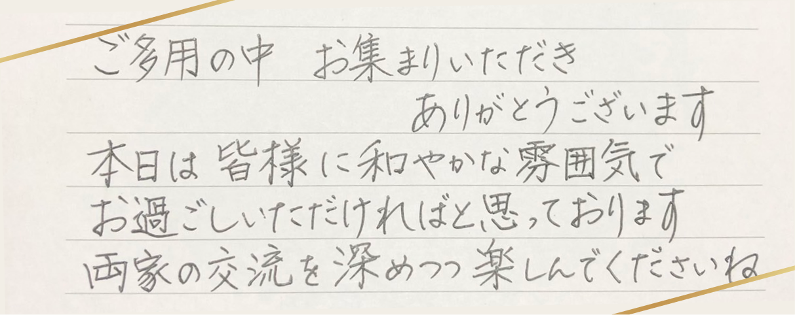

Wedding Festival
Greeting
Profile
西脇 宏輝(32歳)
パズルやLEGOが大好き、
泣き虫
田中 菜々子(35歳)
カラスを追いかけて畑の肥溜めに両足突っ込んでしまいしばらく臭いが取れなかったこと…今ではいい思い出です。
西脇家
新郎父 英紀(ひでのり)
畑仕事頑張り中…
新郎母 純代(すみよ)
テニス、バドに大忙し
今泉家
新郎姉 由貴(ゆき)
子育て奮闘中！
新郎義兄 祐太(ゆうた)
北海道出身、FC東京の大ファン！
新郎姪 朝陽(あさひ)
遊び盛りの女の子
田中家
新婦父 豊(ゆたか)
三姉妹にアウトドアの楽しさを
教えてくれた雑学王！
作ってくれたカレーは絶品！！
新婦母 明美(あけみ)
多趣味で多才なパワフルママ！！
餃子の美味しさは世界一！！
英会話を勉強中
須藤家
新婦妹 実香子(みかこ)
娘2人を育てながら看護師資格を取得した頑張り屋！
そしてオシャレ番長！
義弟 貴大(たかひろ)
どんな時でも穏やかです！
存在が癒しのパワースポット☆
ニックネームは「天ちゃん」
姪 美波音(みなと)
絵の才能抜群な優しいお姉さん！
今日のためにウェルカムボードを作ってくれました！
姪 樹希(いつき)
マラソン大会では校内新記録！
運動神経抜群な元気はつらつ娘です！
村山家
新婦妹 瑞生(みずき)
最近は姉妹の中で1番のしっかり者！！
気になった事はとことん調べる研究家✏️
義弟 寛明(ひろあき)
仙台出身のバスケットマンand手作りピアスを贈る愛妻家！
ニックネームは「むらしー」
甥 陽紀(はるき)
元気いっぱいなわんぱくボーイ！
4月から保育園に通い始めました☆